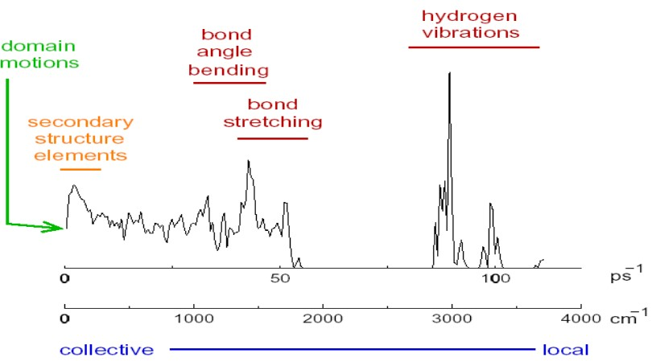

9 Nonbonded Computations and Data Analysis
The rapid, quadratic growth in computational time when all non-bonded interactions increase are summed - this is in contrast to the linear growth shown with “cutoff” procedures.
9.1 Spherical Cutoff Techniques
BS3008 lists three basic categories of cutoff techniques. All of these approaches set a distance-dependent nonbonded function to zero beyond some distance \(r = b\). However, distances less than \(b\) are treated differently:
Truncation
This is the simplest. Values at a distance \(b\) are zeroes, but otherwise unchanged.
Switching Schemes
Values \(a\) at a nonzero value are changed when \(a < b\), but values for \(r < a\) are unchanged.
Shift Functions
The nonbonded function is gradually altered for all \(r < b\).
The above three categories can be applied to the force function’s energy of the nonbonded potentials (i.e., van der Waals or electrostatic); the following schemes or cutoffs can be used:
Atom-based or group-based schemes
In group-based schemes, distance thresholds are applied to distances between group members (e.g., charge groups in a GROMACS topology file).
Group-based cutoffs
These can maintain better charges associated with entire residues. They can avoid potential instabilities in the energy or force that arise when a subset of atoms of a particular residue is altered.
Care should be applied to specify the distance parameter between the distance parameters \(a\) and \(b\).
9.1.1 Guidelines for Cutoff Functions
Prof. Mu lists some guidelines when choosing to use cutoff functions:
- Short-range energies and forces should be altered as little as possible.
- Energies should be gradually altered over time.
- The cutoff approach chosen should not introduce large forces around the cutoff region. This is important for molecular dynamics simulations.
- On the topic of 3), it is important that the cutoff energy alters the energy in a way that conserves energy.
9.1.2 Highly-Charged Systems
The above figure shows the time-evolution of a RMS deviation from the initial structure (i.e., the top graph) - d(CCAACGTTGG)2 and the bottom structure GGAUUUCGGUCC. The dotted lines represent CUT and CUTSS simulations.
CUT is a charge group that’s based on a truncation cutoff. CUTSS is a group that’s based on a truncation cutoff with complete evaluation of all solute-solute interactions.
9.1.2.1 Long-Ranged PME
The total Coulomb energy that corresponds to a system in an infinite periodic domain is:
\[\begin{align} E_{coul} &= \frac{1}{2}\sum_{i, j = 1}\sum_{images |n|}\frac{q_iq_j}{|r_{ij} + n|} = \frac{1}{2}\sum_{j = 1}q_j\Phi(x_j) \\ \Phi(x_j) &= \sum_{i = 1}\sum_{images |n|}\frac{q_i}{|r_{ij} + n|} \end{align}\]
The sum in the above equation is convergent as:
\[\begin{align} \sum_{n = 1}^\infty \frac{1}{n} &= 1 + \left(\frac{1}{2} + \frac{1}{3}\right) + \left(\frac{1}{4} + \frac{1}{5} + \frac{1}{6} + \frac{1}{7}\right) \\ &> 1 + \frac{1}{2} + \frac{1}{2} + \frac{1}{2} + \frac{1}{2} \end{align}\]
9.1.2.2 Ewald’s Trick
To convert the above sum into a sum of two absolutely and rapidly converging series, each point is represented as a Gaussian charge density.
The Ewald sum is:
\[\begin{align} \Phi(r) &= \frac{1}{r} = \Phi_{real}(r) + \Phi_{recip}(r) \\ \Phi_{real} &= \frac{1}{r} - \frac{erf (\beta r)}{r} \\ \Phi_{recip}(r) &= \frac{erf(\beta r)}{r} \end{align}\]
The variable \(\beta\) in the above equations control the width of the distribution and the rate of convergence of the sum.
\[\begin{equation} \rho_{G_j}(x) = -q_j\left(\frac{\beta}{\sqrt{\pi}}\right)^3\exp[-\beta^2|x|^2] \end{equation}\]
The second breakthough in the trick came from the observation that the trigonometric functions in the Fourier series used to represent the reciprocal-space term can be evlauated via smooth interpolation of the potential over a grid.
This resulting particle-mesh Ewald (i.e., PME) method runs in \(O(n\log(n))\) time1.
9.2 Analyzing Molecular Dynamics Data
Prof. Mu lists some approaches in this section of this week’s lecture:
9.2.1 End-to-End Distance
This is the distance between the first and last segment of a biopolymer (i.e., \(d\) in the above graphic).
This is most suitable for describing linear polymers.
9.2.2 Radius of Gyration
This is the mass-weighted average distance of selected atoms from their center of mass and is given by:
\[\begin{equation} Rg = \sqrt{\frac{\sum_{i = 1}^N m_i(r_i - r_{com})^2}{\sum_{i = 1}^N m_i}} \end{equation}\]
This is most suitable for describing branched chains with a large amount of ends.
9.2.3 Mean Square Distance Fluctuation
\[\begin{align} <\delta r^2> &= \frac{\sum_{t = 1}^k(r_t - r_{average})^2}{K} \\ r_{average} &= \frac{\sum_{t = 1}^K r_t}{K} \end{align}\]
\(K\) represents the molecular dynamics simulation’s time step. This describes the size of the atoms’ fluctuations around their equilibrium positions.
9.2.4 Debye-Waller (i.e., B or Temperature) Factor
The Debye-Waller factor \(B_a\) is given by:
\[\begin{align} B_a &= \frac{8}{3}\pi^2<\delta r_a^2> \\ \delta r_a &= r_a - r_{a, average} \end{align}\]
\(B_a\) describes the reduction of intensity of Bragg scattering due to atomic motion about their equilibrium position. The atomic scattering factor is:
\[\begin{equation} f = f_0\exp\left[-B\left(\frac{\sin\phi}{\lambda}\right)^2\right] \end{equation}\]
\(f\) does not vanish even at \(T = 0\) because of atomic motion.
9.2.5 Root Mean Squared Deviation
This is given by :
\[\begin{equation} RMSD(t) = \sqrt{\frac{\sum_{i = 1}^N m_i\left[r_i(t) - r_i^{reference}\right]}{M}} \end{equation}\]
Where \(N\) is the total amount of atoms, \(m_i\) the mass of the atom in question, and \(M\) is the total mass of the molecule.
Thie describes the “distance” between the conformation at a time \(t\) and that of a reference structure (i.e., how similar they are).
9.2.6 Solvent-Accessible Area (i.e., ASA)
The ASA is the area over which contact between a protein and its solvent can occur.
9.3 Protein Flexibilities and Normal Modes

Over half of the 3800 known protein movements can be modelled using two low-frequency normal modes.
A normal mode is an oscillating pattern of motion where all parts of the system move sinusoidally with the same frequency.
These “frequencies” are known as a normal mode’s natural frequencies or resonant frequencies.
9.3.1 Harmonic Approximations
Prof. Mu lists the following methods:
- Perform energy or geometry minimization
- Calculate the Hessian matrix \(\displaystyle K_{ij} = \frac{\partial E}{\partial x_i \partial x_j}\)
- Diagonalize the Hessian to find its eigenvalues and eigenvectors.
The eigenvectors and eigenvalues of 3) indicate the mode of action and the frequency respectively.
As opposed to a direct Ewald sum, which requires \(O(N^\frac{3}{2})\) time.↩︎